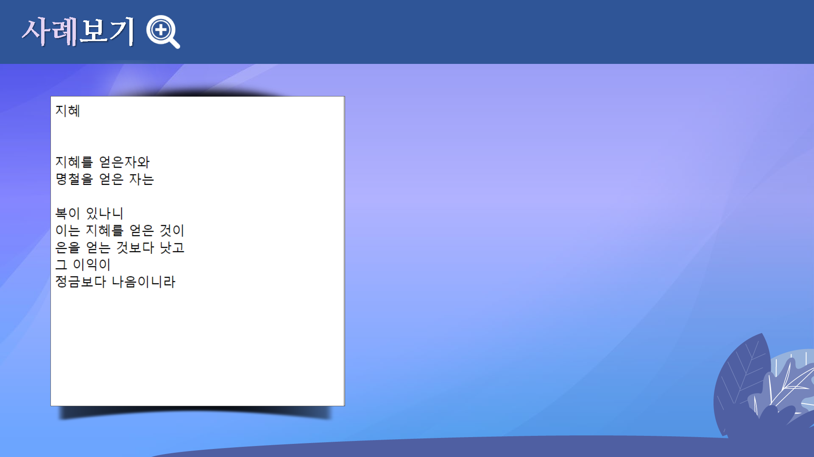

텍스트 태그


학습목표
- 텍스트를 꾸미는 방법을 설명할 수 있다.
- “TEXT 이미지”와 “TEXT”의 차이점을 알 수 있다.
- “굴림”과 “굴림체”의 차이점을 파악할 수 있다.
<ul>태그와<ol>태그를 설명할 수 있다.
학습안내
- 텍스트 이미지와 텍스트
- 텍스트 색상(color) 변경
- 텍스트 크기(font-size) 변경
- 텍스트 글꼴(font-family) 변경
- 기타 택스트 스타일
- 순서 없는 목록
- 순서 목록
학습정리
이번 시간에는 다음과 같은 내용을 학습하였습니다.
- 텍스트 이미지와 텍스트
- 텍스트 색상 변경
- 텍스트 크기 변경
- 기타 텍스트 스타일
- 순서없는 목록
- 순서 목록